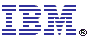

Welcome to the
website for the 2003 meeting of the International Symposium on Code
Generation and Optimization with special emphasis on feedback-directed
and runtime optimization. CGO was held on March 23-26, 2003 at
the Hyatt at Fisherman's Wharf in San Francisco, California.
Welcome to the
website for the 2003 meeting of the International Symposium on Code
Generation and Optimization with special emphasis on feedback-directed
and runtime optimization. CGO was held on March 23-26, 2003 at
the Hyatt at Fisherman's Wharf in San Francisco, California.
CGO provides a premier venue to bring together researchers
and practitioners working on feedback-directed optimization and back-end
compilation techniques. The conference spans the spectrum from
purely static to fully dynamic techniques. CGO addresses code
optimization and focuses on optimizations' interaction with hardware.
It is of special interest to those focused on systems performance and
other benefits visible to system users.
Final Program for CGO 2003
(PDF)
Keynote speaker (Fran Allen, IBM Fellow)
(PDF)
| CGO Sponsors | |
in cooperation with ACM SIGPLAN |
|
| CGO Corporate Supporters | |||
|  | |||